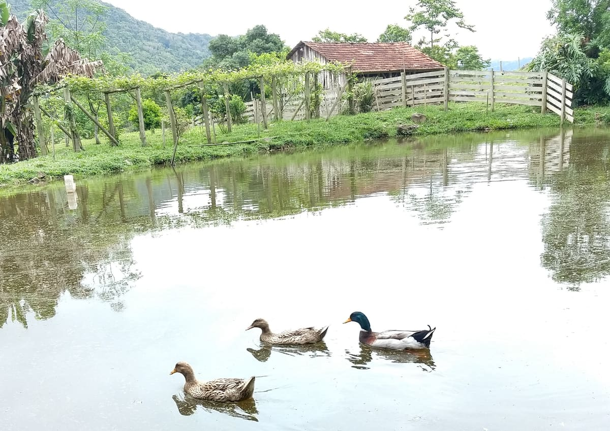
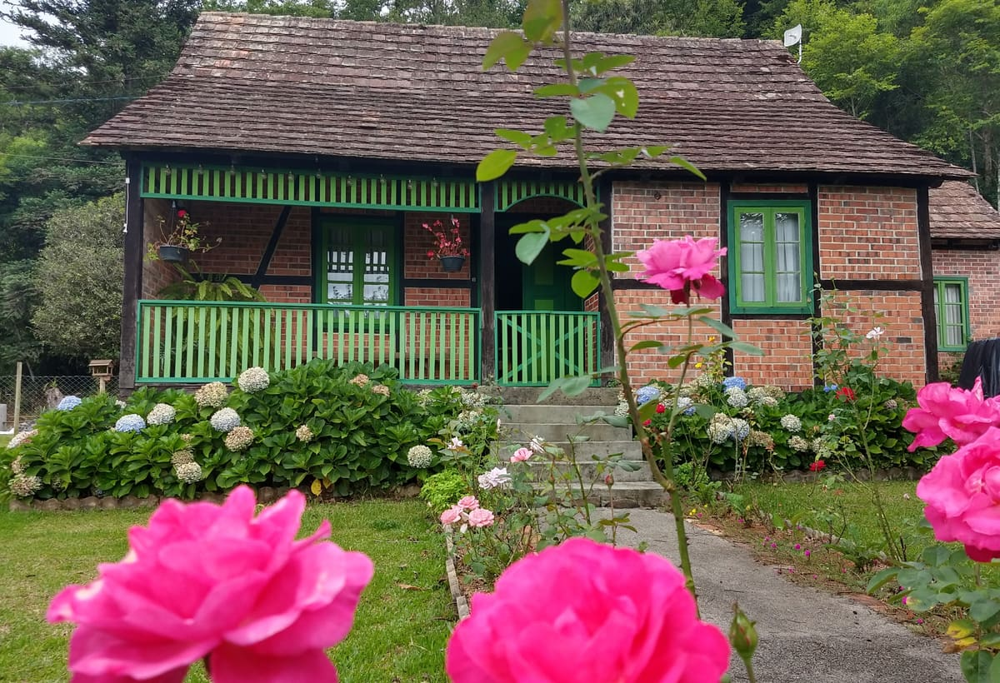
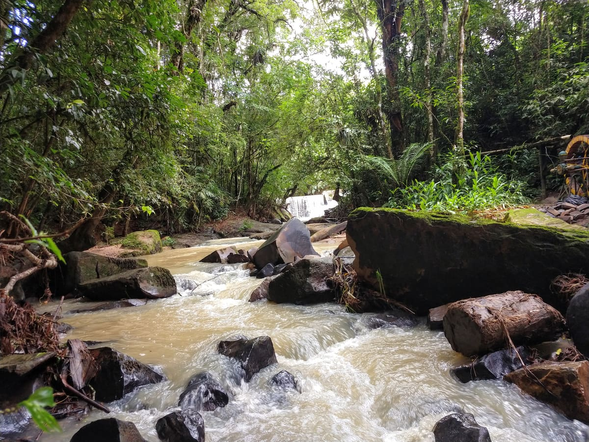
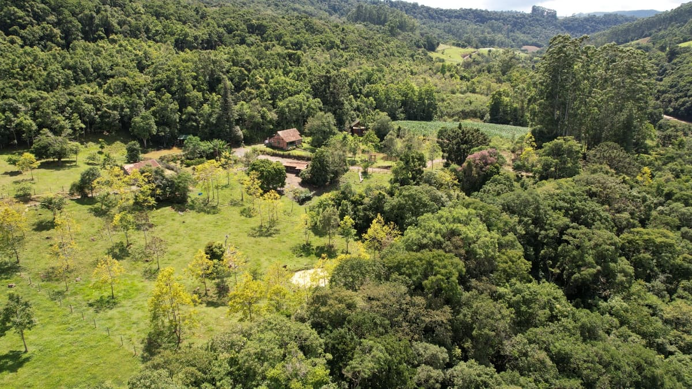
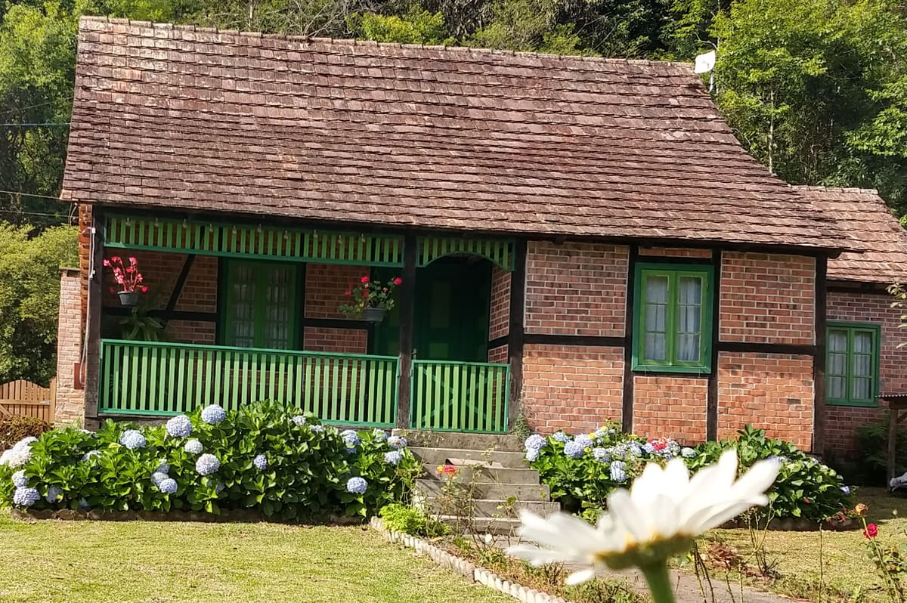
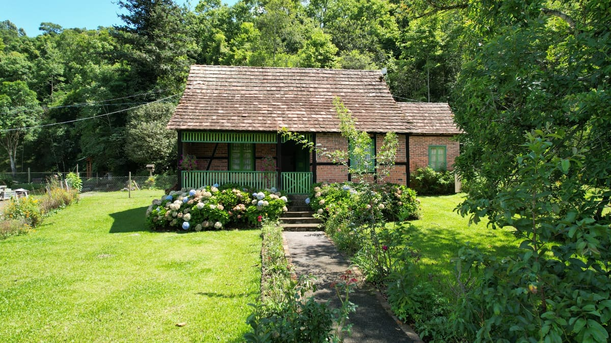
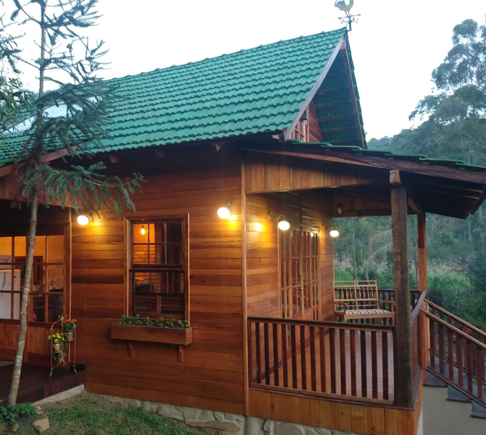

Sítio Rosengarten · Aurora, SC
Cheirinho de mato, brisa fresca, simplicidade e aconchegoChalé para duas pessoas em Aurora, no Alto Vale do Itajaí
No terreno de uma casa enxaimel de 1929, entre a lagoa, o ribeirão e a mata — a poucos minutos do centro de Rio do Sul.
5,0 em limpeza, comunicação, check-in e localização · 18 avaliações no Airbnb
Pelo sítio
A lagoa, o ribeirão e o mato em volta

O ribeirão

A mata
A casa enxaimel de 1929
Um refúgio de tranquilidade

Uma casa antiga, centenária, com seu estilo próprio, cercada por árvores majestosas, lagoas serenas e animais que conferem vida ao ambiente, é um refúgio de tranquilidade. À sua volta, galos anunciam o amanhecer, galinhas exploram os arredores, ovelhas pastam serenamente e coelhos brincam nos campos.
O silêncio que permeia o local é interrompido apenas pelo murmúrio suave do Ribeirão que serpenteia próximo à propriedade, contribuindo para a melodia da natureza. O ar puro envolve a casa, proporcionando uma sensação revigorante.
A proximidade com a natureza não é apenas um aspecto físico, mas uma experiência completa. A beleza das árvores que se estendem pelo horizonte, as lagoas que refletem o céu em tons serenos, e a diversidade dos animais que compartilham esse espaço criam um cenário maravilhoso.
Nesse ambiente campestre, a casa antiga ganha um charme especial, suas paredes contando histórias do passado, enquanto suas janelas enquadram paisagens que transcendem o tempo. No seu interior, vestígios de décadas passadas se entrelaçavam, revelando uma narrativa rica em tristezas e alegrias.
As tábuas do assoalho rangem sob os passos, ecoando memórias de risos infantis e passos apressados. Cada quarto carrega cicatrizes do tempo, testemunhando sonhos realizados e outros que se perderam. As portas, com suas maçanetas gastas, guardam histórias de entradas triunfantes e partidas melancólicas. Cada dobradiça range como um eco do passado, relembrando o constante fluir da vida naquelas paredes que, apesar das rugas, mantém-se firmes.

A varanda, ah sim, a varanda, é o cenário perfeito, onde histórias são compartilhadas ao cair da tarde. Ali, nas noites estreladas, sonhos são partilhados e confidências trocadas. A brisa sussurra segredos guardados nas sombras das paredes antigas. Cada recanto dessa morada é um convite à contemplação e à conexão com a simplicidade da vida rural.
Com seu estilo único, a casa não é apenas um amontoado de tijolos e madeira, mas um cronista silencioso de vidas vividas. Entre suas paredes desbotadas, a história de família se desdobra, entrelaçando-se com a trama mais ampla do tempo. A cada crepitar da lenha no velho fogão, a cada sombra projetada pelas velhas cortinas, a casa conta sua história, uma mistura de saudade e eternidade.
É neste refúgio que o ritmo frenético da vida moderna é substituído pela serenidade do campo, oferecendo um escape valioso. Assim, a casa antiga não é apenas um abrigo, mas um caminho para um estilo de vida que celebra a harmonia entre Deus, o homem e a natureza, onde o silêncio é apreciado, o ar é puro, e a beleza da terra é cultivada.

A hospedagem
O chalé de madeira
Chalé de madeira para duas pessoas, num canto reservado do sítio. Tem fogão a lenha na sala, um trecho de teto de vidro logo acima da cama — dá pra dormir olhando o céu — e uma varanda de frente para a lagoa e para o mato.
A cozinha é completa, a churrasqueira fica na própria varanda, e quem chega costuma encontrar pão fresco, doces caseiros e ovos da granja esperando na mesa.
O que tem no chalé
- Fogão a lenhaSala aquecida e cheiro de lenha
- Teto de vidroUm trecho envidraçado logo acima da cama
- Varanda com vistaDe frente para a lagoa e para o mato
- ChurrasqueiraNa própria varanda, pronta para usar
- Cozinha completaUtensílios para cozinhar de verdade
- Ar-condicionadoPara os dias quentes de verão
- Roupa de cama e banhoTrocadas, limpas e cheirosas
- Produtos coloniaisPão fresco, doces caseiros e ovos da granja
Fotos do chalé
Fotos
O sítio de cima e de perto
Clique em qualquer foto para ampliar. Use as setas do teclado para navegar.
Avaliações
O que os hóspedes escreveram
Avaliações publicadas no Airbnb por quem se hospedou no chalé, entre 2021 e 2023.
- Limpeza
- 5,0
- Comunicação
- 5,0
- Check-in
- 5,0
- Exatidão do anúncio
- 5,0
- Localização
- 5,0
- Custo-benefício
- 4,8
“Definitivamente, uma das minhas melhores experiências no Airbnb. O chalé é super bem distribuído, tudo super confortável e a vizinhança é perfeita pra quem curte natureza, silêncio e calmaria.”
“No terreno do chalé tem uma casinha histórica de 1929 que eles estão restaurando, é um trabalho muito lindo e encantador.”
“Lugar lindo pra quem busca paz e tranquilidade. Foi o melhor réveillon que passamos. A cabana é linda como nas fotos, muito bem equipada e caprichosa.”
“Lugar maravilhoso, muita paz e tranquilidade. O lugar é bem silencioso e tem todos os utensílios domésticos que você precisa de maneira funcional, amamos o lugar.”
“O local é muito bonito, ótimo para descansar e renovar energias. Nosso almoço ainda foi garantido pelos ovos das galinhas que ganhamos do dono do chalé, estava muito gostoso!”
“Reinwald é uma pessoa muito atenciosa e nos apresentou o lugar muito detalhadamente. O lugar é muito tranquilo, privativo, tudo estava muito limpo quando chegamos.”
“Passei o final de semana com a minha filha, adoramos o lugar, muito tranquilo. A cama super confortável, roupas limpas e cheirosas.”
“Nos surpreendeu com pão fresquinho e outros produtos coloniais. O local é privado, aconchegante e bem silencioso. Perfeito para um fim de semana em casal!”
“Chalé confortável, ótimo para um casal. Local silencioso, excelente para descansar. Próximo do centro de Rio do Sul, com fácil acesso.”
“Excelente lugar! Ótimo pra quem procura tranquilidade e silêncio. O seu Reinwald e a sua esposa são super queridos e receptivos.”
“Excelente experiência, padrão 5 estrelas realmente. Voltaremos numa próxima oportunidade.”
“A casa é linda. Os anfitriões são incrivelmente gentis, e quando cheguei deixaram vários mimos.”
Contato
Como chegar ao Sítio Rosengarten
O sítio fica em Aurora, no Alto Vale do Itajaí, perto do centro de Rio do Sul e com acesso fácil pela rodovia.
- Onde fica
- Aurora — Santa Catarina, 89186-000
- Telefone e WhatsApp
- (47) 99886-6297
- Reservas
- Anúncio do chalé no Airbnb
- Redes
- @sitiorosengarten · Facebook